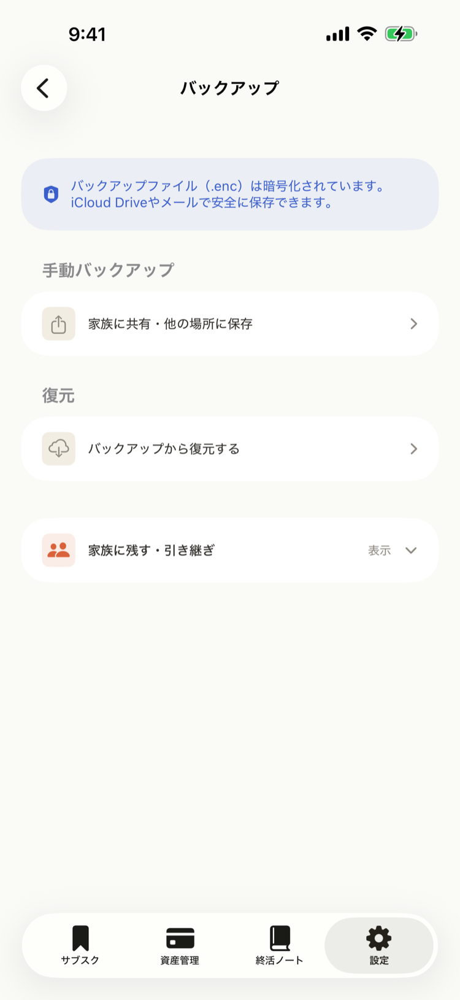
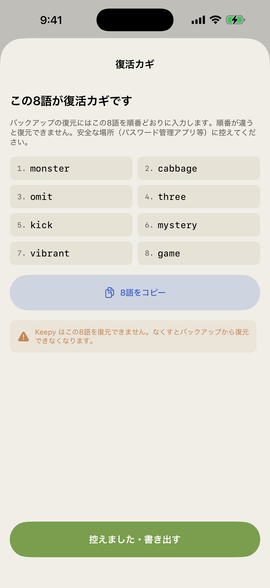
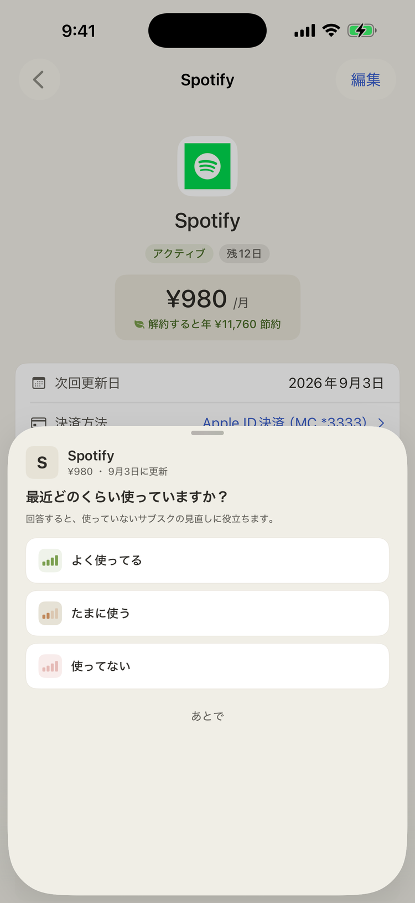
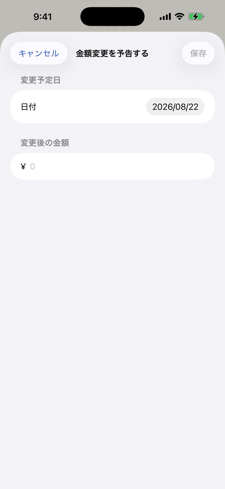
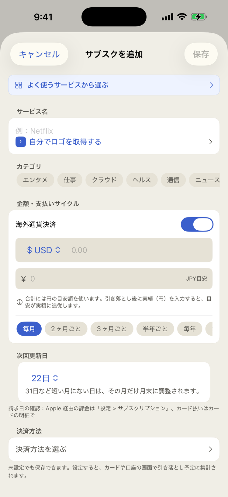
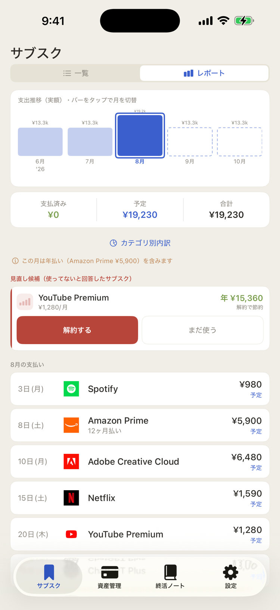
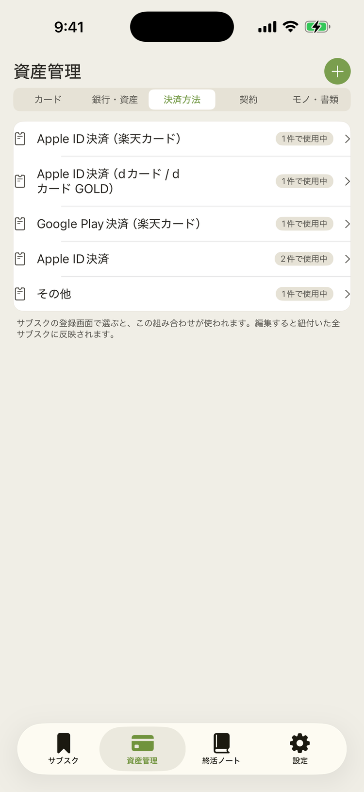
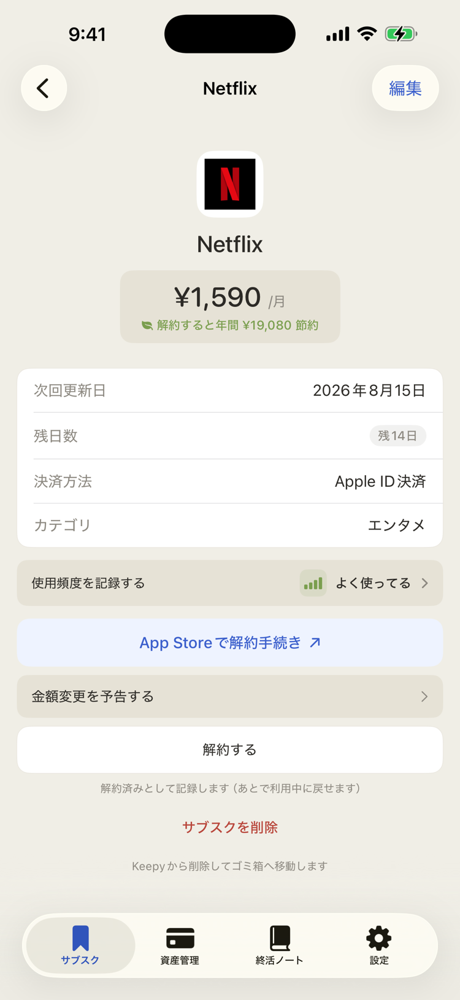
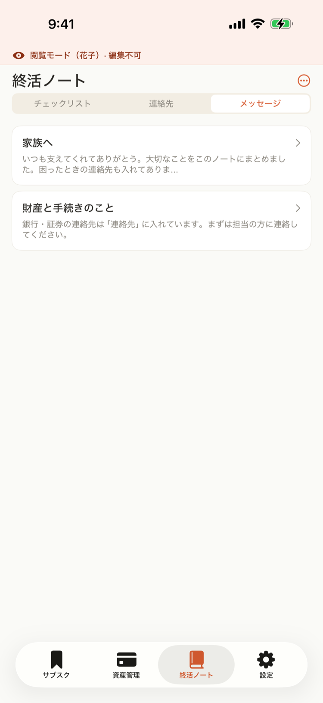
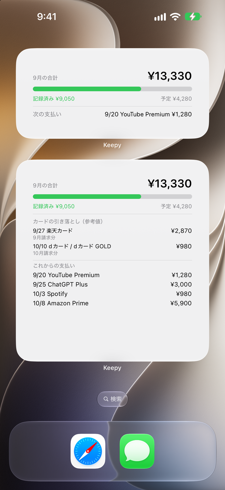

バックアップの基本
Keepy のデータはこの iPhone の中にだけあります。端末の故障・紛失に備えて、バックアップを作っておきましょう。
設定 → バックアップ を開く
はじめてバックアップを作るとき、復元に必要な復活カギ（英単語8語）が発行されます。必ず控えてください。
書き出し先を選んで保存
iCloud Drive の「Keepy」フォルダなどに、暗号化ファイル（.enc）として保存されます。このファイルは暗号化済みなので、復活カギがない限り誰にも中身を読めません。
自動バックアップをオンにする（おすすめ）
オンにしておくと、データに変更があったときだけ、アプリを閉じたタイミングで自動的に書き出します。変更がなければ何もしないので、電池や通信を無駄にしません。

バックアップが30日以上古くなると、通知でお知らせします。
復活カギ（英単語8語）
バックアップを開けられる、たったひとつのカギです。
はじめてバックアップを作るときに、英単語8語の「復活カギ」が発行されます。バックアップファイル（.enc）はこのカギで暗号化されているため、復元にはカギが必要です。
おすすめの保管方法
紙に書いて、通帳や重要書類と同じ場所に保管するのが確実です。家族へ渡す「引き継ぎガイドPDF」にも復活カギを載せられます（載せるかどうかは書き出し時に選べます）。

機種変更・復元
新しい iPhone への引っ越しは「バックアップ＋復活カギ」で行います。
旧端末で最新のバックアップを書き出す
設定 → バックアップから手動で書き出し、iCloud Drive に保存されていることを確認します。
新端末で「別のバックアップから復元する」
新しい iPhone に Keepy をインストールして開き、最初の画面で「別のバックアップから復元する」を選びます。
バックアップファイルと復活カギで復元
iCloud Drive から .enc ファイルを選び、復活カギ（8語）を順番どおりに入力すると、データがすべて戻ります。

「まだ使ってる？」チェックイン
しばらく利用状況を聞いていないサブスクは、更新日の前に Keepy から質問が届きます。
通知「◯◯の更新まで3日。まだ使っていますか？」をタップすると、3択で答えられます。
よく使ってる／たまに使う
そのまま利用中として記録されます。次の更新前は、金額をお知らせする通常の通知になります。
使ってない
その場で「解約すると年間いくら節約になるか」を提示します。レポートの見直し候補にも並び、解約を検討しやすくなります。

回答はいつでも、サブスクの詳細画面「使用頻度を記録する」から変えられます。回答から時間が経つと（約90日）、更新前にまた質問します。
金額変更の予告
値上げの発表を見かけたら、忘れないうちに Keepy に登録しておきましょう。
詳細画面 →「金額変更を予告する」
変更日と新しい金額を入力します。
14日前に通知が届く
「◯◯の料金がまもなく変わります」と事前にお知らせします。
変更日が来たら、金額は自動で切り替わる
予告しておいた新金額が、変更日に月額へ自動反映されます。手で書き換える必要はありません。

外貨建てサブスク
ドル建てなど、毎月の請求額が為替で変わるサブスクのための機能です。
登録フォームで「外貨」をオンにする
通貨と金額を入力すると、円換算の目安額で集計されます。
請求の翌日、「実際はいくら？」の通知
一覧と詳細にも「実績入力待ち」バッジが付きます。明細を見て、実際に引き落とされた円額を入力してください。
実績を入れると、目安も賢くなる
入力した実額で支払い履歴が確定し、円換算の目安も直近の実績に合わせて自動更新されます。

レポートと見直し候補
サブスク画面の上部で「レポート」に切り替えると、支出の全体像が見えます。
支出推移のグラフ
月ごとの支払い実績をバーで表示します。点線のバーは今後の予定額。バーをタップすると、その月の内訳に切り替わります。
支払済み／予定／合計 と カテゴリ別内訳
選んだ月の支払済み・これからの予定・合計を分けて集計。「カテゴリ別内訳」でエンタメ・仕事などの割合も見られます。
見直し候補
チェックインで「使ってない」と答えたサブスクが、解約した場合の年間節約額つきで並びます。その場で「解約する」（記録）か「まだ使う」を選べます。
先月のまとめ（毎月1日）
毎月1日の朝に「先月のサブスクレポート」の通知が届き、タップすると先月のまとめが開きます。支払い合計と前月比・増減の理由・その月の出来事・見直しのヒント・年間換算を1画面で振り返れます。レポートで過去の月を選び「この月のまとめを見る」からも、いつでも開けます。

年払いサブスクの更新月には、見逃さないようバナーでお知らせします。
決済方法（どこから引き落とされるか）
「Apple ID決済（楽天カード）」のような支払いの組み合わせを決済方法として登録し、サブスクに紐づけられます。
サブスクの登録画面で「決済方法を選ぶ」
保存済みの決済方法から選ぶか、その場で新しく作れます。経由サービス（Apple ID決済・Google Play決済・d払い・auかんたん決済・ソフトバンクまとめて支払い・PayPal など）と、引き落とし元のカード・口座の組み合わせです。カードから直接引き落とされる場合は、経由サービス「なし」でカードだけを選びます。未設定のままでも保存できます。
編集すると、使っている全サブスクに反映
資産管理タブの「決済方法」に、登録した組み合わせが使用件数つきで並びます。編集すると、その決済方法を使っている全サブスクにまとめて反映されます（カードを乗り換えたときに1回直すだけ）。編集画面には使用中のサブスクの一覧も表示され、タップで詳細に移動できます。過去の支払い記録は変わりません。
カード・口座の画面で「どこからいくら落ちるか」
決済方法を設定したサブスクは、カード詳細の「このカードから引き落とされるサブスク」や口座詳細の集計に自動で入ります。解約手続きのボタンも決済方法に合わせて変わります（Apple ID決済なら App Store の解約ページへ直行）。

解約の記録と再開
Keepy の「解約する」は記録です。実際の解約手続きはサービス側で行います。
実際の解約手続きへ直行
詳細画面の「App Store で解約手続き」などのボタンから、そのサブスクの決済方法に合った解約ページへ直接移動できます。
Keepy に「解約済み」を記録
「解約する」を押すと Keepy 上で解約済みとして記録され、通知も止まります。実際の解約が済んだことにはならないので、手続きはサービス側で必ず行ってください。
いつでも再開できる
解約済みのサブスクは一覧の「解約済み」に残ります。また使い始めたら、詳細画面の「利用中に戻す」で再開してください。完全に消したい場合は削除（ゴミ箱へ移動）します。

家族モード
もしものとき、ご家族が「見るだけ」でアクセスできる専用モードです。
オーナーが家族を登録
設定 →「家族を管理する」からご家族を登録し、それぞれに家族パスコードを設定します。
家族はロック画面の「ご家族はこちら」から
名前を選んで家族パスコードを入力すると、家族モードで開きます。閲覧のみで、内容の編集はできません。
チェックリストで手続きを進める
解約が必要なサービスが優先度順に並んだチェックリストが表示されます。上から順に手続きし、済んだものは「手続き完了」を記録できます。

家族への引き継ぎ設定
共有フォルダの作成から書き出しまで、初回にやり切る5ステップは専用ガイドにまとめています。
通知の種類一覧
Keepy が送る通知は次のとおりです。設定 → 通知設定で「更新前の通知」「月次・年間レポート」「カード引き落とし通知」のオン・オフを切り替えられます（iPhone 側の通知許可も必要です）。
| 通知 | タイミング |
|---|---|
| 更新リマインダー | 請求日の前（サブスクごとに設定・はじめは3日前）。利用状況によって「まだ使っていますか？」の質問や解約の提案に変わります |
| 無料トライアル終了 | 終了の2日前 |
| 金額変更 | 予告した変更日の14日前 |
| 縛り期間の終了 | 60日前と当日 |
| モノ・書類の期限 | 3ヶ月前と当日 |
| カード引き落とし | カードに設定した引き落とし日の前日朝。Keepy 登録分の合計金額つき（参考値） |
| 月次レポート（先月のまとめ） | 毎月1日の朝。タップするとレポート画面で先月のまとめが開きます |
| 年間レポート | 毎年1月1日の朝 |
| 実績入力（外貨） | 請求日の翌日 |
| バックアップが古い | 前回から30日経過 |
| 引き継ぎガイドが古い | 前回の書き出しから6ヶ月経過 |
ウィジェット
アプリを開かなくても、ホーム画面で今月の支払いがわかります。
ホーム画面を長押し → 「＋」→ Keepy
中サイズは今月の合計・支払いの進捗バー・次の支払いを、小サイズは次の支払い（サービス名・金額・あと何日か）を表示します。設定 → 通知設定の「通知に金額・サービス名を出さない」をオンにすると、ウィジェットの表示も伏字になります。
